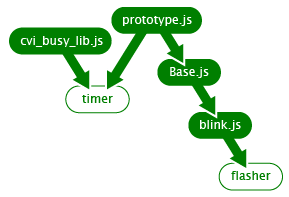

Doc : Examples
Example 2: Lazy Loading Under Duress
This example shows how JSLoad's lazy-loading behavior will work even when a number of asynchronous events are hitting it at the same time load any libraries that have already been loaded. Try clicking the buttons multiple times and in different orders. A logging pane will appear below, showing you what libraries are loaded when. You'll see that only files are loaded only when necessary, and in the right order.
The dependencies are shown below:

Run stuff!